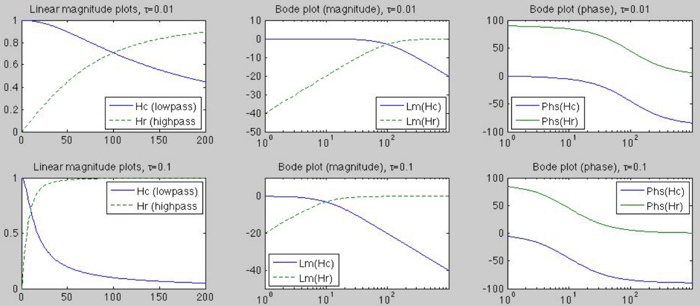

The first order RC and RL systems can be used as either a high-pass or
low-pass filter, depending on voltage across which component is treated
as the output, while the input voltage is applied across both
components connected in series. For example, if the voltage  across
across  is treated as the output, the RC circuit is a high-pass filter
and the RL circuit is a low-pass filter. The cut-off or corner frequency
of such filters is
.
is treated as the output, the RC circuit is a high-pass filter
and the RL circuit is a low-pass filter. The cut-off or corner frequency
of such filters is
.
- RC circuit
Treating the RC circuit as a voltage divider, the phasor representations of
the voltage across and  are
are
and
where is the time constant of this RC first order system. The
FRFs and transfer functions of the systems are
and are high-pass and low-pass filters, respectively. At the
cut-off frequency defined as
, the magnitude of the
output attenuates to
of the peak magnitude, the output power
is half of the input power:
- RL circuit
Treating the RL circuit as a voltage divider, the phasor representation of
the voltage across can be found to be
where is the time constant of this RL first order system. The
FRFs and transfer functions of the system are
and
This system is a low-pass filter as it passes low frequencies but
attenuates high frequencies.
The cut-off or corner frequency
 is defined as
the frequency at which the magnitude of the output attenuates to
of the peak magnitude, unity in first
order systems, and the output power is half of the peak power,
the input power for first order systems. The gain of a system is
typically measured in decibel (dB) and plotted in Bode plots in
terms of the log-magnitude of the FRF defined as
.
At the cut-off frequency, we have
is defined as
the frequency at which the magnitude of the output attenuates to
of the peak magnitude, unity in first
order systems, and the output power is half of the peak power,
the input power for first order systems. The gain of a system is
typically measured in decibel (dB) and plotted in Bode plots in
terms of the log-magnitude of the FRF defined as
.
At the cut-off frequency, we have
(For more discussion of the Bode plots, see
here.)
